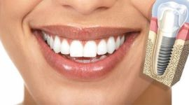
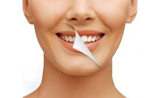
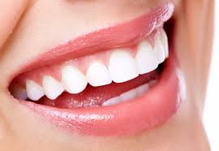
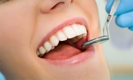
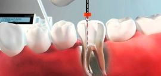

Implantes
Un implante es un dispositivo médico creado para reemplazar, ayudar o mejorar alguna estructura biológica faltante.
blanqueamiento Dental
El blanqueamiento dental es un tratamiento de estética dental que se aplica a los dientes oscurecidos, por la pérdida de la capa de esmalte.
Protesis Dental
Una prótesis dental es un elemento artificial que sirve para restaurar la anatomía de uno o varios dientes.
Cirugías
Una cirugía es una operación quirúrgica que se realiza en la cavidad oral para solucionar elementos anatómicos patológicos.
Tratamientos Endodonticos
La endodoncia es un procedimiento que tiene como finalidad preservar las piezas dentales dañadas, evitando así su pérdida.